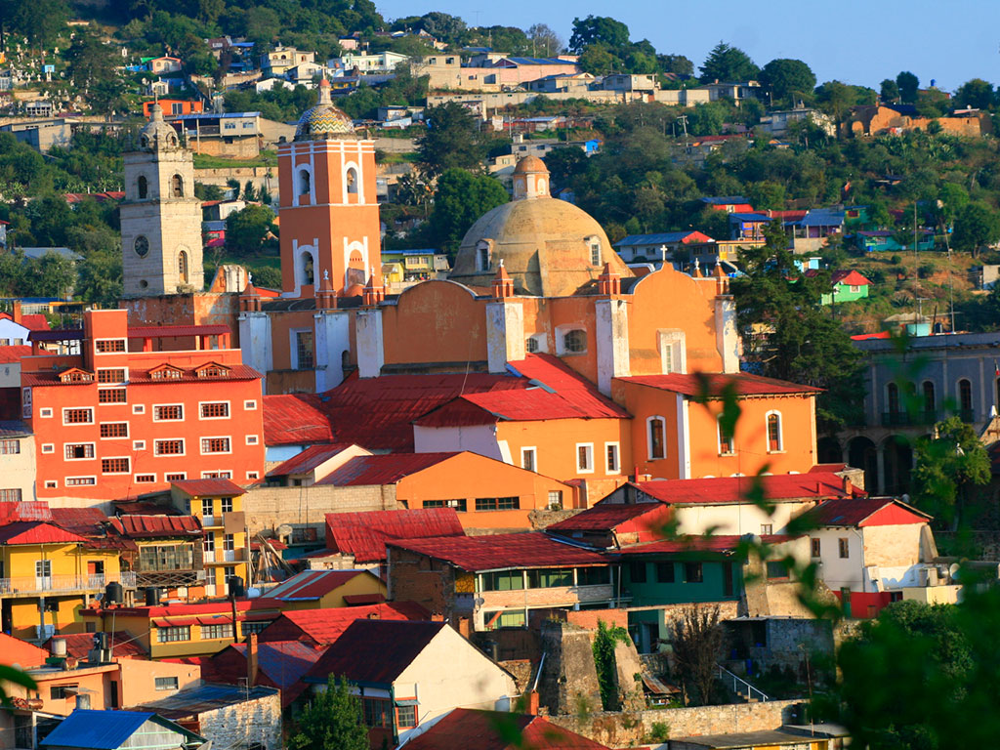

"Paste". Este delicioso empanada rellena de carne, papa y otros ingredientes, generalmente sazonados con especias como comino y pimienta, tiene su origen en la influencia británica en la región durante el siglo XIX. Los "pastes" son una parte importante de la gastronomía hidalguense y se pueden encontrar en diferentes variedades, incluyendo el tradicional de carne, así como opciones vegetarianas y de otros sabores.
Unlugar emblemático en Hidalgo es la ciudad de Real del Monte, también conocida como Mineral del Monte. Esta ciudad minera tiene una rica historia y una arquitectura colonial bien conservada que atrae a visitantes de todo el país.

Notas relevantes:
Un dato curioso sobre Hidalgo, México, es que es
conocido como el lugar de nacimiento de uno de los líderes más
importantes de la Revolución Mexicana:
Miguel Hidalgo y Costilla. Además, Hidalgo es reconocido por sus
tradiciones culturales arraigadas, como la celebración de la
Independencia de México el 16 de septiembre, que se conmemora en todo
el país pero tiene una importancia especial en esta región debido a su
conexión histórica con el padre de la independencia mexicana. Además,
Hidalgo es famoso por su deliciosas gastronomía, que incluye platillos
como los tamales de Hidalgo, los pastes y la barbacoa.